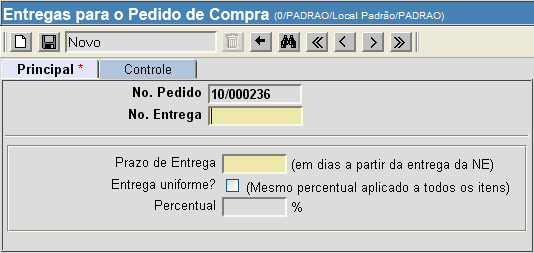

Cadastrar Pedido de Compra [ Voltar ]
Para registrar um pedido de compra, clique no formulário "Cadastrar
pedido de compra", que encontra-se dentro do menu "Compras".
Ao clicar no formulário, o sistema exibirá a seguinte
tela:
Siga os passos abaixo para efetuar um pedido de
transferência:
1º
Passo: informe os dados principais do pedido. Os campos
em amarelo são obrigatórios.
- N°. do pedido.
Este campo apresenta um sinal de mais "+" por padrão. Desta forma,
assim que o registro é salvo, é-lhe atribuído o próximo número de
pedido disponível.
- Tipo. Selecione aqui
um tipo de pedido: Abastecimento regular,
Pedido
emergencial e Ação
judicial.
- Fonte de natureza.
Informe a natureza do pedido que deseja criar: Atenção básica, Alta complexidade, Atendimento especializado ou
Atendimento
hospitalar.
- Local de entrega.
Informe o local para entrega do pedido. Se necessário, clique no botão
 [Procurar] para
selecionar o local a partir de uma lista contendo os locais cadastrados. [Procurar] para
selecionar o local a partir de uma lista contendo os locais cadastrados.
- N°. do processo.
Se já houver um processo de compra, inserir aqui o número do
mesmo.
- Status. É exibida
neste campo a situação atual do pedido: Aberto, Processado ou Arquivado.
- Data de
emissão. É exibida aqui a data e hora do processamento do
pedido.
- Observações. Se
desejar, deposite neste campo informações adicionais sobre o
pedido de compra.
2° Passo: clique
no botão  para salvar os dados principais
do pedido. Assim que o registro é salvo, uma grade para
inclusão dos produtos do pedido é exibida na parte inferior da tela. para salvar os dados principais
do pedido. Assim que o registro é salvo, uma grade para
inclusão dos produtos do pedido é exibida na parte inferior da tela.
3° Passo: especifique os produtos e quantidades desejadas. Se
não souber o código do produto, clique no botão [Procurar]
presente no campo "Produto"
para selecionar o produto a partir de uma lista contendo os produtos
cadastrados.
Na tela de pesquisa de produto, certifique-se de escolher o tipo de
pesquisa desejada:
- Padrão. Esta
pesquisa contempla todos os produtos cadastrados, sejam eles
materiais ou medicamentos. Esta pesquisa exibe o código e a descrição
dos produtos.
- Medicamentos. Utilize
esta pesquisa para exibir apenas os medicamentos cadastrados.
- Materiais
médico-hospitalares. Marque esta
opção para listar apenas os materiais cadastrados.
- Dados gerais. Este
modo de pesquisa lista todos os produtos cadastrados e exibe
informações detalhadas dos mesmos, como unidade de medida,
classificação XYZ, status, etc.
Utilize os filtros da pesquisa para facilitar a localização do produto
desejado. Os filtros disponíveis para esta pesquisa são:
- Código
do produto.
Digite neste campo caracteres do código do produto desejado para
retornar produtos cujos códigos tenham o conteúdo aqui digitado.
- Descrição
resumida (contém). Digite aqui caracteres
relativos à descrição do produto para que a
pesquisa retorne todos os produtos que contêm o conteúdo digitado.
- Descrição
resumida (inicia com). Digite neste campo os
caracteres iniciais da descrição do produto desejado. Desta forma, a
pesquisa retornará todos os produtos cujas descrições se iniciem com o
conteúdo aqui digitado.
- Grupo/Subgrupo.
Se desejar listar produtos de um determinado grupo ou subgrupo,
selecione-o aqui.
Selecione
o produto desejado com um clique. Em seguida, uma vez de volta à tela
principal, informe a quantidade desejada no campo "Quantidade".
Pressione a tecla "Enter" ou "Tab" para seguir de um campo a outro e
para criar uma nova linha.
Para criar e
excluir linhas da grade, utilize os botões  [Novo] e [Novo] e  [Excluir] da grade
(ver imagem abaixo). [Excluir] da grade
(ver imagem abaixo).
4° Passo: clique
no botão para salvar os produtos
selecionados.
5° Passo: clique na aba "Entregas" para especificar o cronograma da
entrega. Você pode selecionar um dos modelos de entrega
existentes ou ainda criar uma entrega personalizada.
Selecione no campo "Modelo
de entrega"
um cronograma adequado para este pedido. Ao selecionar o modelo
desejado, uma descrição detalhada deste será exibida no campo "Descrição da entrega".
Os modelos de entrega disponíveis são:
- Conforme solicitação.
- 30% em 10 dias e mensais de 10%.
- 100% em 30 dias.
- 100% em 60 dias.
- 100% em 90 dias.
- 100% em 10 dias.
- 100% em 20 dias.
- 25% em 10 dias e 3 mensais de 25%.
- 40% em 10 dias e 2 mensais de 30%.
- 100% em 5 dias.
- 50% em 10 dias e 50% em 40 dias.
- 20% em 10 dias e 4 mensais de 20%.
- 30% em 10 dias, 2 mensais de 15% e 4 mensais de 10%.
- 30% em 10 dias, 20% em 40 dias, e 5 mensais de 10%.
- 100% em 15 dias.
- 25% em 90 dias e 3 mensais de 25%.
- 20% em 90 dias e 4 mensais de 20%.
Após selecionar um dos modelos de entrega, clique no botão
e prossiga para o 6° passo.
Para personalizar um cronograma de entregas, clique
no botão  ao
lado do campo "Modelo de
entrega". Para isto, ver informações abaixo: ao
lado do campo "Modelo de
entrega". Para isto, ver informações abaixo:

- Digite o número da entrega no campo "N°. da entrega"
e o prazo de dias em que esta deve acontecer (por exemplo: entrega 1,
10 dias após a entrega da nota de empenho; entrega 2, 20 dias após a
entrega da nota de empenho, etc).
- Clique no botão
para salvar a entrega. Assim que a entrega é salva, uma grade para
inclusão do conteúdo da entrega é exibido na parte inferior da tela.
- Informe
os produtos e quantidades que deseja para esta entrega. Se desejar
entregas uniformes, marque a opção "Entrega uniforme?" para que o mesmo
percentual seja aplicado a todos os itens. Em seguida, especifique o
percentual no campo de mesmo nome na grade.
- Clique no botão para concluir esta estrega.
- Para criar outras
entregas que comporão o cronograma, siga novamente os passos acima de
criação de entregas.
Após
personalizar as entregas, clique no botão  para voltar à tela
principal do pedido de compra. para voltar à tela
principal do pedido de compra.
6° Passo: clique no botão  para concluir o pedido de
compra.
Assim que o registro é processado os seguintes botões se tornarão
habilitados: para concluir o pedido de
compra.
Assim que o registro é processado os seguintes botões se tornarão
habilitados:
-
 - Clique neste botão para visualizar e imprimir o relatório "Pedido de
Compra".
- Clique neste botão para visualizar e imprimir o relatório "Pedido de
Compra".
-
 -
Caso algum dado do pedido necessite de revisão, clique neste botão
para alterar dados do pedido. Após revisar o pedido, é necessário
repetir o 6°
passo e processar novamente o pedido. -
Caso algum dado do pedido necessite de revisão, clique neste botão
para alterar dados do pedido. Após revisar o pedido, é necessário
repetir o 6°
passo e processar novamente o pedido.
Observação:
somente é possível revisar pedidos para os quais não haja uma ordem de
compra cadastrada.
-
-
Se o pedido de compra não se fizer mais necessário, clique neste
botão para para arquivá-lo. Assim, ele será desconsiderado. Se desejar
arquivar apenas parte do pedido, informe a quantidade que deve ser
arquivada no campo "A arquivar" da grade. Em seguida, é necessário
clicar no botão
também presente na grade (ver imagem abaixo).
Ao clicar no botão ,
uma janela será aberta para que o usuário informe o motivo do
arquivamento parcial do pedido. Após informar o motivo, pressione o
botão "OK".
Ir
para o topo da página
|